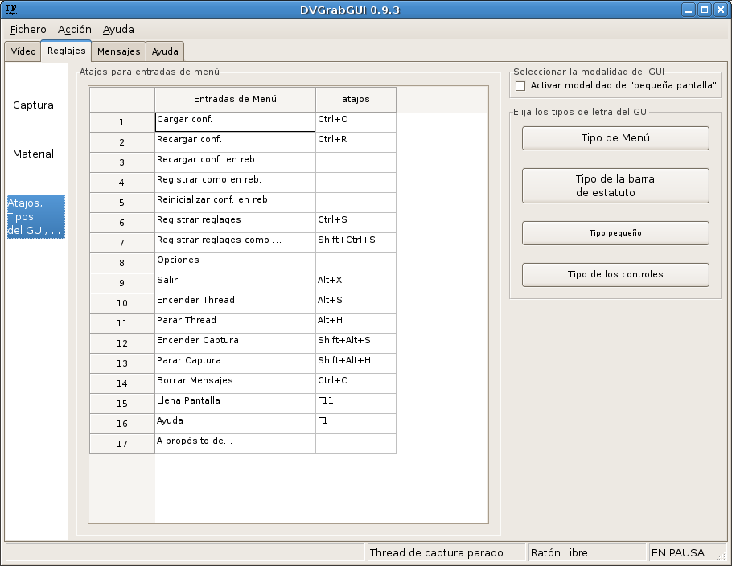

Pre: Referencias → Reglajes → Material --- ↑Home
DVGrabGUI 0.9.4
Referencias → Reglajes → GUI
Este uñero le permite ajustar las opciones de la interfaz.

-
Atajos para entradas de menú:
Aquí puede añadir/modificar atajos para las entradas de menú. Las
teclas modificadoras ("Shift", "Ctrl" y "Alt") pueden ser entradas con
sus nombres completos, o con dos letras: "s_" para shift, "c_" para
ctrl, y "a_" para alt. El "real" atajo puede ser una letra, una tecla
de función ("F1" hasta "F12"), o la tecla "enter". Puede separarlas con
un espacio, o un signo "-" o "+".
Aquí están unos ejemplos: "c_ alt+S" para "Ctrl+Alt+S";
"Alt-s_ f05" para "Shift+Alt+F5"; …
-
Seleccionar la modalidad del GUI:
Activar modalidad de "pequeña pantalla"
Active esto para pasar en modalidad de GUI "pequeña pantalla",
optimizada para pantallas táctiles de 800×600.
-
Elija los tipos de letra del GUI:
Estos cuatro botones le permiten modificar los tipos de letra de la
interfaz:
-
Tipo de Menú
Debería modificar el tipo de los menús, ¡pero no parece funcionar
con wxGTK!
-
Tipo de la barra de estatuto
Para modificar el tipo de la barra de estatuto…
-
Tipo pequeño
Para modificar el "tipo pequeño" utilizado por unos textos de
informaciones.
-
Tipo de los controles
Para modificar el tipo utilizado por todos los controles (textos
estáticos, botones, …).
Pre: Referencias → Reglajes → Material --- ↑Home
(c) 2006, 2007, 2008 Bastien Montagne (montagne29 en wanadoo punto fr).
Proyecto albergado en sourceforge.net/projects/dvgrabgui.